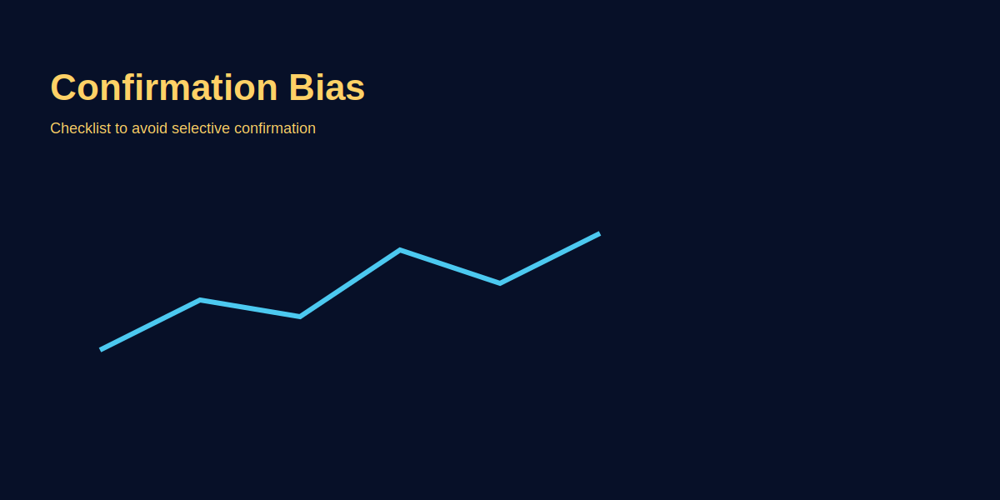

Confirmation Bias in Trading
Problem-based introduction
Confirmation bias leads traders to seek information that supports their view and ignore contradicting data. This article reveals practical checks and process changes to reduce bias, with GOLD trade examples.
Step-by-step explanation
- Recognise bias triggers: strong prior belief, recent wins, or social echo chambers.
- Use checklist approach: require at least two independent confirmations before size increase.
- Implement devil's advocate step: intentionally look for opposite evidence.
Real trading logic (GOLD example)
Before entering a GOLD long, check higher timeframe trend, liquidity conditions, and any macro events that contradict your bias. If any contradict, skip or reduce size.
Image-based examples (mandatory)
Example journal entry showing how to log contradictory evidence and the decision outcome.
Common Mistakes
- Filtering news and data to match existing bias.
- Increasing size based on selective positive signals only.
Pro Tips
- Keep a structured pre-trade checklist that includes contradictory checks.
- Rotate your information sources and ensure they are independent.
Risk Warning
Cognitive biases can cause persistent losses if not checked—prioritise process over belief.
SEO FAQs
- 1. Confirmation bias kya hai?
- Inclination to favour information that confirms existing beliefs and ignore others.
- 2. Kaise reduce karein?
- Use checklists, require independent confirmation, and actively seek contrary data.